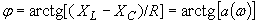
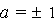
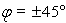
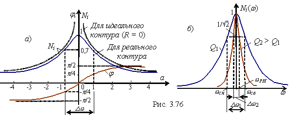

2.7.2.8. јмплитудно- и фазо-частотна€ характеристики тока
—огласно (2.114) Ni(ω) = ¦(ω;Q), причем чем больше добротность Q (меньше резистивное сопротивление колебательного контура при неизменных остальных параметрах схемы), тем более острой (пикообразной) становитс€ форма кривой Ni(ω) (рис. 2.76, б ). ‘азо-частотна€ характеристика φ(a) контура представлена на рис. 2.76, а. “ак как фазовый угол , то при  угол   |